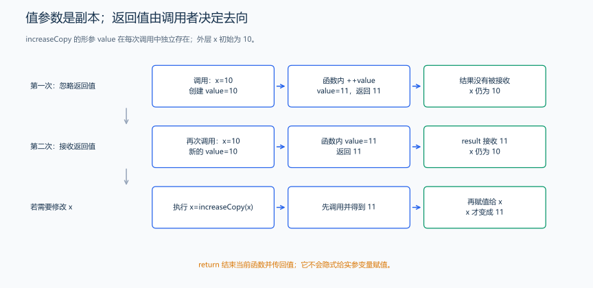
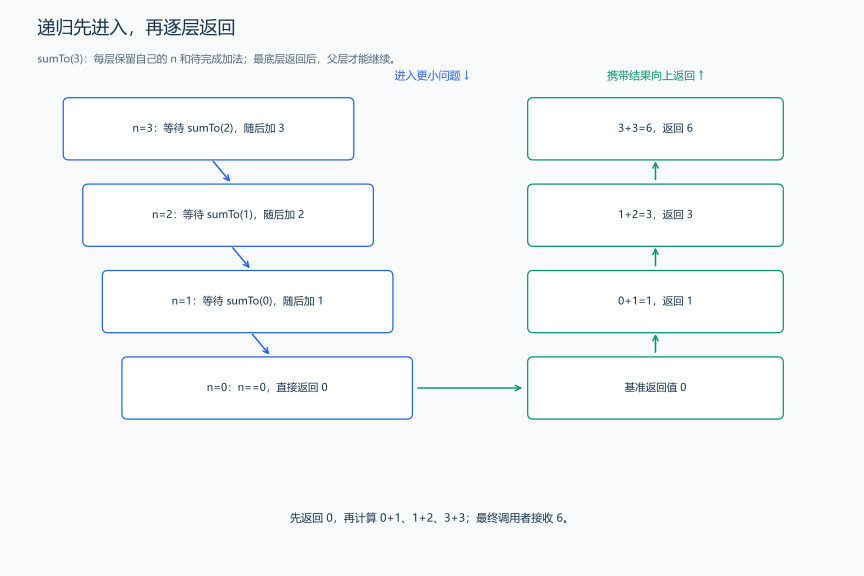

（七） 函数、参数与作用域
在多个位置重复计算两数之和，每次复制代码会让修改容易遗漏。函数把一段操作取名，调用者给输入、函数完成处理、结果交回调用者；先分清这三个角色，再学习参数和生命周期。
1. 函数的返回类型、参数与执行过程
int add(int a,int b) 中，第一个 int 是返回值类型，add 是名称，括号里的两项声明参数，花括号里的语句是函数体。调用 add(2,3) 时，2、3 是实参，a、b 是接收它们的形参。
题目原文（自拟）： 程序无需输入。x 初值为 10。调用将值参数加一并返回结果的函数，第一次忽略结果，输出 x；第二次接收结果，输出结果与 x；最后输出 add(x) 和 add(2,3)，add 的第二参数默认是 0。
分析： 值参数得到 x 当前值的副本；改副本不会写回 x。返回 11 也不等于自动给 x 赋 11，调用者需要明确接收或赋值。默认参数只补充调用中省略的实参。

#include <iostream>
using namespace std;
int add(int a, int b = 0) {
return a + b; // 返回一个独立的整数结果。
}
int increaseCopy(int value) {
++value; // 只修改函数自己的参数。
return value; // 函数调用表达式的结果是这个整数。
}
int main() {
int x = 10;
increaseCopy(x); // 计算出 11，但没有接收，也没有修改原来的 x。
cout << x << '\n';
int result = increaseCopy(x); // 将返回值接收到另一个变量。
cout << result << ' ' << x << '\n';
cout << add(x) << ' ' << add(2, 3) << '\n'; // 第一处补上默认参数 0。
}输出：
10
11 10
10 5如果写 x=increaseCopy(x);，才会用返回值更新 x。void 返回类型表示没有结果值，例如只执行输出的函数；return; 可以提前结束 void 函数。普通非 void 函数应在所有可达的正常返回路径提供结果；main 末尾隐式返回 0 是特殊规则。
2. 声明让名字可见，定义提供具体操作
固定数据演示： 下面 main 调用 add(2,3)，但把函数体写在 main 后面；先声明接口，输出 5。
#include <iostream>
using namespace std;
int add(int a, int b); // 声明：编译 main 时已经知道参数与返回类型。
int main() {
cout << add(2, 3) << '\n'; // 调用前有声明，函数体可在后面定义。
}
int add(int a, int b) {
return a + b; // 定义给出实现：将两个参数相加并返回结果。
}只写声明而没有定义，不会凭空生成实现；需要这个函数时，链接可能报错。默认参数通常从参数列表末尾给出，写 add(3) 时省略的是最后一项。声明处已经提供的默认参数，不应又在同一作用域的定义处重复指定。
3. 重载：同名操作接收不同参数类型
题目原文（自拟演示）： 用两个同名 larger 函数，分别比较整数 3、5，以及小数 2.5、1.0，输出两结果。
#include <iostream>
using namespace std;
int larger(int a, int b) {
return a > b ? a : b; // 整数版本。
}
double larger(double a, double b) {
return a > b ? a : b; // 小数版本，逻辑相同，参数类型不同。
}
int main() {
cout << larger(3, 5) << '\n'; // 选择整数参数版本，输出 5。
cout << larger(2.5, 1.0) << '\n'; // 选择 double 参数版本，输出 2.5。
}重载需要参数列表等方面满足相应区分规则，只改返回类型不能让同一调用知道选谁。larger(3,2.5) 可能让这两个版本都需要转换，无法选出更优者；明确按 double 处理时可先转换 3。模板章节会从“两段相同逻辑”的重复继续推导类型参数 T。
4. 局部、外层与全局：同名不代表同一对象
题目原文（自拟演示）： 全局 value=100，main 内 value=7，内层块又有 value=2。先输出内层名字，再离开该块输出 main 的名字与明确指定的全局名字。
#include <iostream>
using namespace std;
int value = 100; // 全局变量，普通程序运行期间持续存在。
int main() {
int value = 7; // main 的局部变量，在这个范围内遮蔽全局同名名字。
{
int value = 2; // 新对象，内层同名名字暂时遮蔽外层。
cout << value << '\n';
} // 内层局部对象结束生命周期，重新能按 value 找到 main 的变量。
cout << value << ' ' << ::value << '\n'; // ::value 明确从全局作用域找名字。
}输出为 2、7 100。遮蔽改变当前名字查找的结果，没有给外层变量重新赋值。普通局部变量通常离开块后销毁，函数返回后其普通局部对象也不再存在；后面指针、引用章节会解释为什么不能继续访问它们。
5. static 局部变量：跨调用保留数据
固定数据演示： 普通局部 count 每次调用重新从 0 开始，static 局部 count 的初始化只进行一次；各调用三次，观察结果。
#include <iostream>
using namespace std;
int ordinaryNumber() {
int count = 0;
return ++count; // 每次新建 count，始终返回 1。
}
int nextNumber() {
static int count = 0; // 第一次初始化后，后续调用继续使用原来的对象。
return ++count;
}
int main() {
for (int i = 0; i < 3; ++i) {
if (i > 0)
cout << ' ';
cout << ordinaryNumber();
}
cout << '\n';
for (int i = 0; i < 3; ++i) {
if (i > 0)
cout << ' ';
cout << nextNumber(); // 依次返回 1、2、3。
}
cout << '\n';
}输出为 1 1 1、1 2 3。static 局部变量的名字仍局限于函数内部，生命周期却跨越调用；可见范围与存在时间不是同一概念。多组竞赛数据中，这种保留也可能让旧状态影响新一组，需要按题意重置或选择普通局部变量。
6. 递归的最小例子：暂停调用者，返回后继续
题目原文（自拟）： 输入 0<=n<=1000，用递归计算 1 到 n 的和；n=0 的和为 0。
推导： 求 n 项的和，可以先求前 n-1 项，再加 n；当 n=0 时不再分解，直接返回 0。每次调用都有自己的参数 n，因此“把 n 改小后再调用”没有把父层的 n 也改小。

#include <iostream>
using namespace std;
long long sumTo(int n) {
if (n == 0)
return 0; // 终止条件；没有它就会继续调用负数。
long long previous = sumTo(n - 1); // 当前层暂停，等待子调用的返回值。
return previous + n; // 返回后恢复当前层，使用这一层自己的 n。
}
int main() {
int n;
cin >> n;
cout << sumTo(n) << '\n'; // n=3 时输出 6，n=0 时输出 0。
}输入 3，输出 6。进入顺序是 3→2→1→0；返回时 0 交回 0，1 层算 0+1，2 层算 1+2，3 层算 3+3。加法发生在子调用返回之后，不是在第一次进入就知道完整答案。
这个任务的循环做法已经足够，递归用于观察调用机制。它会同时保留多层尚未结束的调用，n 很大时可能耗尽调用栈；搜索章节会继续讲递归选择、回溯和记忆化，不能仅凭公式递减就忽略空间。
函数目前得到值的副本。若任务要求直接交换调用者的两个数，下一节就需要明确传入的是副本、别名还是地址。